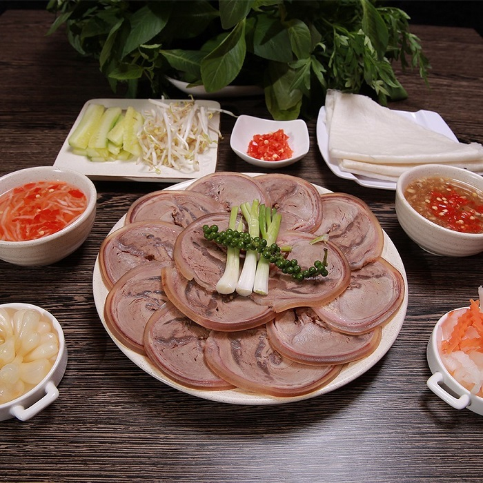

Bò tơ Tây Ninh và 12 địa chỉ thưởng thức thơm ngon, lạ miệng
Bò tơ Tây Ninh hương vị thơm ngọt tự nhiên, đem chế biến thành bất kỳ món ăn nào cũng ngon tuyệt hảo. Ghé thăm Tây Ninh bạn đừng quên một lần nếm thử món bò tơ đặc trưng của vùng đất này.
Bò tơ chuẩn vị Tây Ninh thơm ngon và có giá trị dinh dưỡng cao (Ảnh: Sưu tầm)
Không chỉ hút khách nhờ hương vị thơm ngon, khác biệt mà món bò tơ Tây Ninh còn gây thương nhớ nhờ sự biến tấu đa dạng của các đầu bếp. Dưới đây là 12 địa chỉ ăn món bò tơ chuẩn vị Tây Ninh được đông đảo thực khách lui tới mỗi ngày!
1. Thế nào được gọi là bò tơ?
Đi du lịch Tây Ninh, du khách sẽ không khó để tìm được một quán bò tơ vì đây chính là đặc sản nổi tiếng ở miền đất này. Tuy nhiên, có bao giờ bạn tự hỏi vì sao lại gọi là bò tơ hay không?
Bò tơ là bò non chưa thuần thục sinh sản hoặc chưa trưởng thành. Đặc biệt, bò tơ không phải là bê như nhiều người vẫn lầm tưởng mà là những con bò đã phát triển tới khoảng 5-6 tháng với trọng lượng trung bình từ 50-60 kg/con. Như vậy, bò tơ không quá non như bê nhưng cũng không quá già như bò trưởng thành.
Thịt bò tơ mềm, ngon và vị ngọt tự nhiên (Ảnh: Sưu tầm)
Bò tơ có thịt mềm, ngọt, ngon và thơm hơn so với thịt bò thông thường. Quan sát bằng mắt thì thấy thịt bò tơ có màu trắng gần giống như thịt lợn, không phải màu hồng hay đỏ như thịt bò lâu năm. Lớp da của thịt bò tơ cũng rất mỏng, khoảng 0,2 - 0,5 cm, trong khi đó thịt bò già thì lớp da dày hơn nhiều. Ngoài ra, chân lông của bò tơ thường nhỏ và có màu trắng, còn thịt bò già có lông chân to và đen hơn.
2. Bò tơ Tây Ninh nổi tiếng thơm ngon khó cưỡng
Bạn có thể ăn món bò tơ ở nhiều địa phương khác nhau nhưng chuẩn vị và ngon nhất phải kể đến bò tơ Tây Ninh. Do đó, nếu bạn chưa biết ăn gì ở Tây Ninh thì hãy thưởng thức ngay món đặc sản này.
Các món ăn từ thịt bò tơ có vị ngon hấp dẫn (Ảnh: Sưu tầm)
Bò tơ có thịt mềm nhưng không bở như thịt bê, thoảng mùi sữa, ngọt tự nhiên nên được rất nhiều thực khách ưa chuộng. Bò tơ ở giai đoạn từ 5-6 tháng chủ yếu bú sữa mẹ, chưa ăn nhiều các loại thức ăn khác nên thịt rất thơm và đậm đà, khi nấu không cần phải cho quá nhiều gia vị. Bạn có thể chế biến được nhiều món ăn ngon từ bò tơ như: nướng, xào, nhúng giấm, nấu lẩu hay luộc cuốn bánh tráng.
3. Bò tơ Tây Ninh ở đâu ngon?
Có thể nói, đến với Tây Ninh mà bỏ lỡ món bò tơ thì xem như bạn bỏ lỡ một phần trong tinh hoa ẩm thực của nơi này. Mặc dù vậy, ăn bò tơ ngon ở đâu Tây Ninh thì không phải ai cũng nắm rõ. Dưới đây là 12 địa điểm thưởng thức món bò tơ Tây Ninh chuẩn vị, thơm ngon hấp dẫn.
3.1. Quán bò tơ Năm Sánh Tây Ninh
-
Địa chỉ: đường 30/4 nối dài (QL2B), phường 2, thành phố Tây Ninh
-
Giá tham khảo: 130.000 - 150.000 VNĐ/đĩa
Quán bò tơ Năm Sánh ngon nức tiếng ở Tây Ninh (Ảnh: Sưu tầm)
Muốn ăn bò tơ đặc sản Tây Ninh ngon phải ghé đến quán bò tơ Tây Ninh Năm Sánh. Các món bò tơ ở đây được nướng trực tiếp tại bàn. Chỉ với một nguyên liệu chính mà các đầu bếp ở đây có thể biến tấu ra nhiều món ngon khác nhau như: bò tơ nướng chấm tương, bắp bò cuốn bánh tráng, đùi bò nướng chấm muối ớt xanh, bò bóp thấu, bò nhúng mắm ruốc, bò sốt chanh dây… Món ăn nào cũng mang hương vị đặc biệt không thể nào quên.
3.2. Bò tơ ngon ở Tây Ninh - Home Beer Garden
-
Địa chỉ: số 179 đường Nguyễn Văn Rốp, phường 4, thành phố Tây Ninh
-
Giờ mở cửa: 10h00 - 23h00
-
Giá tham khảo: 30.000 - 100.000 VNĐ/món
Home Beer Garden là địa điểm ăn uống ngon ở Tây ninh được giới sành ăn thường xuyên lui tới. Thịt bò tơ ở đây có hương vị đậm đà, hấp dẫn, chinh phục những khẩu vị khó tính nhất. Không gian quán rộng rãi, thiết kế bắt mắt cũng là điểm cộng của Home Beer Garden.
Món bò tơ ở quán Home Beer Garden có hương vị đậm đà, hấp dẫn (Ảnh: Sưu tầm)
3.3. Nhà hàng Melia Vinpearl Tay Ninh
-
Địa chỉ: số 90, đường Lê Duẩn, khu phố 5, phường 3, thành phố Tây Ninh, tỉnh Tây Ninh
Nhà hàng 986 Bar & Bistro ở khách sạn Melia Vinpearl Tay Ninh có thực đơn Steakhouse sử dụng nguyên liệu bò tơ Tây Ninh tươi ngon. Món ăn được kết hợp với rượu vang được lựa chọn khéo léo để tăng thêm phần thơm ngon và đẳng cấp. Tới đây, thực khách vừa được thưởng thức món ăn hấp dẫn vừa có thể ngắm nhìn toàn cảnh núi Bà Đen hùng vĩ.
Không gian ẩm thực thoáng đãng và sang trọng ở nhà hàng Melia Vinpearl Tay Ninh
3.4. Quán bò tơ Tây Ninh Út Khương
-
Địa chỉ: số 24 đường 3/2, thành phố Tây Ninh, tỉnh Tây Ninh
-
Giờ mở cửa: 10h00 - 22h00
Tuy thời gian mở bán chưa lâu nhưng quán Út Khương được rất nhiều du khách yêu thích. Quán có không gian thoáng đãng, rộng rãi rất thích hợp để đi nhóm đông người, gia đình. Từ nguyên liệu bò tơ, quán Út Khương mang đến cho thực khách menu đa dạng như: lẩu bò, lẩu xí quách, lẩu riêu cua bắp bò… Đồ nhúng đi kèm tươi ngon, mang lại sự trọn vẹn cho món ăn.
Bò tơ Út Khương không chỉ thơm ngon mà còn bắt mắt (Ảnh: Sưu tầm)
3.5. Quán bò tơ Tây Ninh Tấn Lộc
-
Địa chỉ: đường tỉnh 784, xã Truông Mít, huyện Dương Minh Châu, tỉnh Tây Ninh
Quán Tấn Lộc khiến du khách thương nhớ bởi vẻ mộc mạc của những chòi lá rộng, không gian ăn uống thoải mái. Thực đơn của quán bao gồm: bò nướng, lẩu bò, bò luộc bánh tráng, lòng bò… Ngoài ra, quán Tấn Lộc còn phục vụ thêm các món hải sản như: hàu, mực, ghẹ, tôm, sò… để du khách thoải mái lựa chọn.
Thịt bò tơ quán Tấn Lộc luôn tươi rói và thơm ngon (Ảnh: Sưu tầm)
3.6. Bò tơ Tây Ninh - Quán Nhật Trường
-
Địa chỉ: số 180 Trưng Nữ Vương, khu phố 5, phường 1, thành phố Tây Ninh, tỉnh Tây Ninh
-
Giờ mở cửa: 09h00 - 22h00
Quán bò tơ Nhật Trường có mặt ở thành phố Tây Ninh đã hơn 10 năm nên trở thành địa điểm ăn uống quen thuộc của nhiều gia đình. Không gian quán rộng rãi, sạch sẽ, bài trí bắt mắt. Mỗi bàn sẽ có một bếp nướng trực tiếp khiến thực khách rất thích thú. Thịt bò tơ ở đây mềm, hương vị ngon ngọt tự nhiên. Đặc biệt, món lẩu bò ở đây khiến nhiều người mê mẩn bởi nước dùng khác biệt và cuốn hút.
Không nên bỏ qua quán Nhật Trường với món bò tơ ngon hấp dẫn (Ảnh: Sưu tầm)
3.7. Bò tơ Tây Ninh Ba Bằng
-
Địa chỉ: ấp Ninh Trung, phường Ninh Sơn, thành phố Tây Ninh, tỉnh Tây Ninh
Món bò tơ ở quán Ba Bằng có hương vị thơm ngon và bài trí đẹp mắt, níu chân thực khách bốn phương. Menu của quán phong phú, nhân viên phục vụ thân thiện giúp du khách thực sự thoải mái. Ngoài món bò tơ, quán Ba Bằng còn phục vụ các món như: hàu nướng mỡ hành, mì xào hải sản, cá lóc nướng… Do đó, đến đây du khách thoải mái lựa chọn bất kỳ món ngon theo sở thích.
Thưởng thức vô vàn món ngon từ bò tơ ở quán Ba Bằng (Ảnh: Sưu tầm)
3.8. Bò tơ Tây Ninh Trần Hiền
-
Địa chỉ: tỉnh lộ 6, xã Hưng Thuận, thị xã Trảng Bàng, tỉnh Tây Ninh
Quán bò tơ Trần Hiền có phong cách trang trí dân dã, mộc mạc và thanh bình. Thịt bò sẽ được mang ra để khách tự ướp, tự nướng hoặc ăn lẩu tùy thích. Giá cả ở quán Trần Hiền được du khách đánh giá là khá bình dân, hợp túi tiền của đa số người dùng.
Quán bò tơ Trần Hiền hương vị đặc biệt, giá cả phải chăng (Ảnh: Sưu tầm)
3.9. Nhà hàng Nam Sanh nổi tiếng thịt bò Tây Ninh
-
Địa chỉ: đường 30 tháng 4, thành phố Tây Ninh, tỉnh Tây Ninh
Thịt bò tơ Tây Ninh ở quán Nam Sanh tươi ngon nên giữ được vị ngọt tự nhiên. Menu của quán chủ yếu là các món về bò như lẩu bò, thịt bò nướng… Chất lượng thịt bò đảm bảo, không gian thoáng đãng, giá cả phải chăng là những ưu điểm vượt trội mà quán Nam Sanh sở hữu. Do đó, dù không ở ngoài mặt tiền nhưng quán vẫn luôn tấp nập khách ghé tới.
Quán bò tơ Trần Hiền hương vị đặc biệt, giá cả phải chăng (Ảnh: Sưu tầm)
3.10. Nhà hàng bò tơ Tây Ninh Trường Lạc
-
Địa chỉ: Trung Lập, xã Hưng Thuận, thị xã Trảng Bàng, tỉnh Tây Ninh
Quán bò tơ Trường Lạc có thực đơn đa dạng, từ các món nướng, luộc đến các món xào, nấu… Mỗi món ăn đều có hương vị khác biệt và hấp dẫn rất riêng. Bò tơ ở đây ngọt thịt, mềm vừa phải, tẩm ướp đậm đà. Du khách gọi món chỉ cần chờ khoảng 15-20 phút và nhân viên phục vụ đều tận tình, hiếu khách.
Quán bò tơ Trần Hiền hương vị đặc biệt, giá cả phải chăng (Ảnh: Sưu tầm)
3.11. Quán Tiền Tài nổi tiếng là quán bò tơ Tây Ninh ngon
- Địa chỉ: số 12 Ấp Bến Đình, Xã Thạnh Đức, huyện Gò Dầu, tỉnh Tây Ninh
Thêm một địa chỉ ăn bò tơ ngon phải kể đến là quán Tiền Tài. Những món ăn ở đây đều mang hương vị hấp dẫn, được chế biến đặc biệt. Thực khách có thể chọn thịt bò xào khoai tây, thịt bò nướng, thịt bò xào củ hành hay tất tần tật các món từ bò đều được đáp ứng. Ngoài ra, quán Tiền Tài còn phục vụ các món về hải sản thơm ngon vô cùng.
3.12. Bò tơ Tây Ninh Minh Tân
- Địa chỉ: 148 Thượng Thâu Thanh, Long Thành Trung, Long Trung, Hoà Thành, tỉnh Tây Ninh
Đa số các thực khách mê mẩn quán Minh Tân vì hương vị hấp dẫn của các món ăn như: lẩu xí quách, bò nướng, lẩu óc tủy… Lẩu xí quách siêu to khổng lồ, nạc thịt, nhiều gân và sụn xung quanh. Món bò nướng được thực hiện ngay tại bàn của du khách. Món lẩu óc tủy béo ngậy, không bị tanh. Điểm chung của các món ăn là thịt bò đều mềm, thơm và ăn mãi không chán.
Món bò tơ nướng hấp dẫn ở quán Minh Tâm (Ảnh: Sưu tầm)
Ngoài bò tơ thì Tây Ninh còn rất nhiều các đặc sản khác như: ốc núi Tây Ninh, bánh tráng Tây Ninh, bánh canh Trảng Bàng, thằn lằn núi bà Đen, mắm chua Tây Ninh… Để có thể thưởng thức hết đặc sản và thăm thú các danh lam thắng cảnh đẹp như: cửa khẩu Mộc Bài Tây Ninh, chùa Bà Đen Tây Ninh, tháp cổ Bình Thạnh Tây Ninh... thì du khách nên đặt phòng nghỉ dưỡng tại Melia Vinpearl Tay Ninh.
Không gian sang trọng, cao cấp của khách sạn Melia Vinpearl Tay Ninh
Khách sạn Melia Vinpearl Tay Ninh cao 21 tầng với 127 phòng thuộc khu phức hợp Vincom & Vincom Shophouse nằm ngay tại trung tâm thành phố. Khách sạn Melia Vinpearl Tay Ninh có lối kiến trúc mang đậm dấu ấn hoàng gia tân cổ điển và có tầm nhìn bao quát ấn tượng. Ngoài hệ thống phòng ốc sang trọng, hiện đại thì Melia Vinpearl Tay Ninh còn có các tiện ích cao cấp khác như: nhà hàng, quán bar, Lobby Lounge sang chảnh…
Bò tơ Tây Ninh là món đặc sản mà bạn không nên bỏ lỡ khi đặt chân đến mảnh đất thanh bình này. Hãy lưu ngay 12 địa chỉ thưởng thức món bò tơ ngon nức tiếng để đến khám phá và trải nghiệm. Chắc chắn hương vị thơm ngon của món ăn sẽ khiến bạn nhớ mãi một Tây Ninh hiếu khách và thân thiện.
Lưu ý: nội dung trang web được lấy từ: Vinpearl